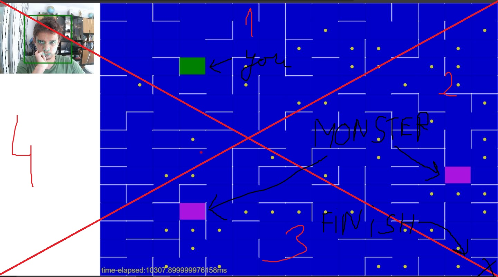

Here you should rezolve the maze using your eyes.
The screen is divided into 4 dials separated by the diagonals.
If you are looking in the top dial(dial 0) the player(which is the green square) will move up(similar for
other
dials).
You will start from the top-left corner and you shuld arrive in the bottom-right corner.
The red dot indicates the aproximative position where you are looking.
To calibrate the eye-tracking system you should click(make sure to click in a wide area(target the
corners)) while looking at the cursor.
You should look 500ms at one dial to move in the respective direction.
The time it takes to finish the labirint is measured!
Each coin reduce that time with 2000ms.
The labirint has minimum 1 monster. The monster(s) will try to eat you so run.
The image below should clarify all(dials and their numbers are with red)
PS:Sometimes the maze is not fully generated(so you can't finish it), pls refresh the
page.
